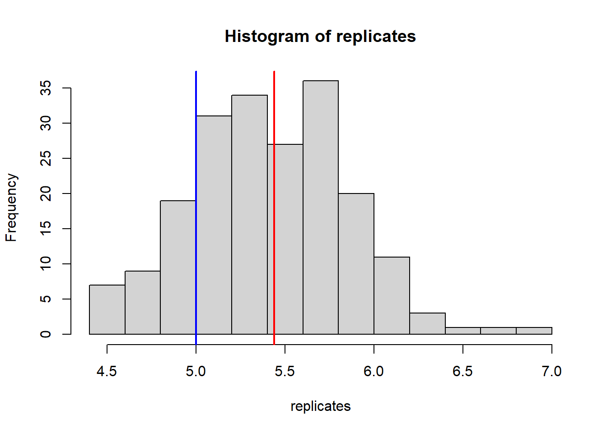
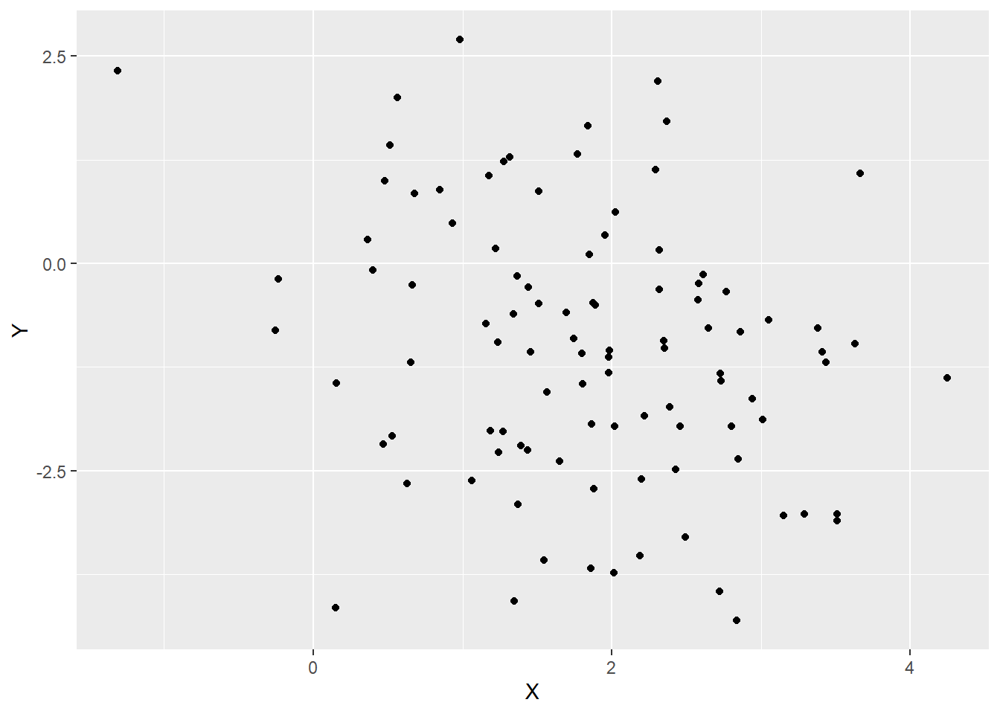
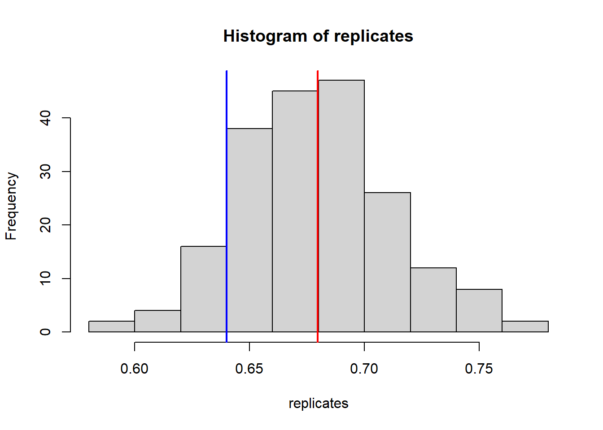
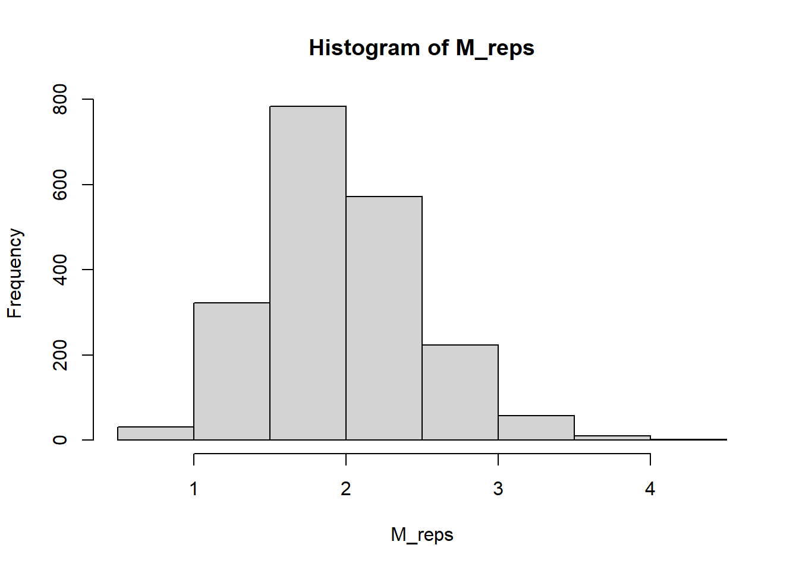
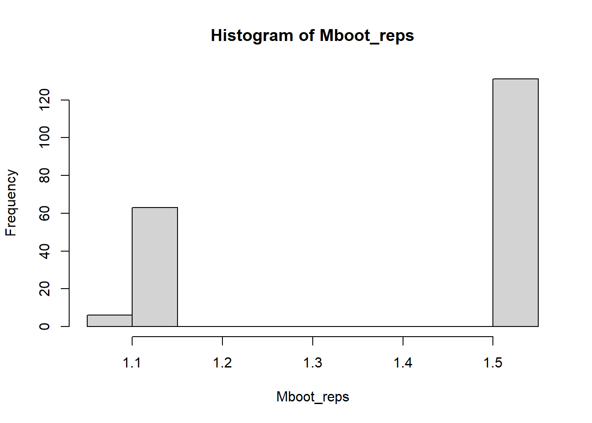

n = 25
lambdatrue = 5
data = rpois(n=n, lambda=5); # Generate a sample of 25 iid RVs
lambdahat = mean(data); # Estimate lambda.
# Now, let's do the bootstrap.
# We'll repeatedly (B times) resample n=25 observations from the data.
# On each resample, compute lambdahat (i.e., take the mean).
B = 200; # Number of bootstrap replicates.
replicates = rep(NA,B); # We'll store
for( i in 1:B ) {
# Sample WITH REPLACEMENT from the data sample itself.
resample = sample(data, n, replace=TRUE)
# Compute our statistic on the resample data.
# This is a *bootstrap replicate* of our statistic.
replicates[i] = mean(resample)
}40 Bootstrapping
Readings: ISLR Section 5.2
In previous lectures throughout the semester, we have looked at different ways of quantifying uncertainty in our data and our resulting estimates. Among the most fundamental tools in statistics for quantifying uncertainty is the bootstrap. Ultimately, the bootstrap amounts to resampling our data as though it were the population itself. Rather surprisingly, this can actually help us estimate certain quantities related to variances (i.e., uncertainty).
40.1 Learning objectives
After this lecture, you will be able to
- Explain the bootstrap and its applicability.
- Implement and apply the bootstrap to estimate variance in simple models.
40.2 Estimating Variance
In a wide range of applications, we need to estimate the variance of our data.
Example: confidence intervals
Given data \(X_1,X_2,\dots,X_n\) drawn from some distribution, we are often interested in constructing a confidence interval for some parameter \(\theta\). For example, \(\theta\) might be the mean of our distribution. If an estimator \(\hat{\theta}\) is approximately normal about \(\theta\), we could construct an approximate CI for \(\theta\) if only we knew the standard deviation of \(\hat{\theta}\), \[ \sigma_{\hat{\theta}} = \sqrt{ \operatorname{Var} \hat{\theta} }. \] We have seen in our lectures on estimation and confidence intervals that there are ways to estimate this variance, but sometimes it is a lot more complicated (e.g., more computationally expensive or more mathematically complicated).
Example: errors in linear regression
Recall that in linear regression we observe \((X_i,Y_i)\) pairs where \[ Y_i = \beta_0 + \beta_1 X_i + \epsilon_i,~~~i=1,2,\dots,n \] where \(\epsilon_1,\epsilon_2,\dots,\epsilon_n\) are drawn iid according to a normal with mean zero and unknown variance \(\sigma^2 > 0\).
During our discussions of linear regression in the last few weeks, we saw situations where we were interested in the sampling distribution of the estimated coefficients \(\hat{\beta}_0, \hat{\beta}_1\) (e.g., in adjusted \(R^2\) or in interpreting the p-values associated to different coefficients). Often, we need to know \(\sigma^2\) or at least have a good estimate of it. How might we estimate \(\sigma^2\)?
40.2.1 Tricky variance computations
In situations like the above, we had central limit theorems or similar results that allowed us to estimate the variance of the quantities we cared about. Unfortunately, this isn’t always the case. Here’s a simple example, adapted from ISLR (beginning of Section 5.2):
Example: allocating investments
Suppose that we have two different stocks we can invest in, which yield returns \(X\) and \(Y\). So, we invest a single dollar (just to keep things simple!), and we need to split between these two different stocks. Let’s say we put \(\alpha\) dollars into the first stock (with return \(X\)) and \(1-\alpha\) (i.e., the rest) into the second stock (with return \(Y\)).
Then we get back an amount \(\alpha X+ (1-\alpha) Y\).
Now, this amount of money that we get back on our investment is random, because it is based on the (random) stock yields \(X\) and \(Y\). An obvious thing to do is to try and maximize this, but this can result in us making risky bets.
Most investment strategies instead aim to minimize the “risk” (note: in statistics, risk means something very different from this– this is the “finance” meaning of the term “risk”): \[ \begin{aligned} \operatorname{Var}\left( \alpha X + (1-\alpha) Y \right) &= \alpha^2 \operatorname{Var} X + (1-\alpha)^2 \operatorname{Var} Y + 2\alpha(1-\alpha) \operatorname{Cov}(X,Y) \\ &= \alpha^2 \sigma_X^2 + (1-\alpha)^2 \sigma_Y^2 + 2\alpha(1-\alpha) \sigma_{XY} \end{aligned} \] Where \[ \begin{aligned} \sigma_X^2 &= \operatorname{Var} X \\ \sigma_Y^2 &= \operatorname{Var} Y \\ \sigma_{XY} &= \operatorname{Cov}( X, Y ). \end{aligned} \] One can prove that \(\operatorname{Var}\left( \alpha X + (1-\alpha) Y \right)\) is minimized by taking \[ \alpha = \frac{ \sigma_Y^2 - \sigma_{XY} }{ \sigma_X^2 + \sigma_Y^2 -2\sigma_{XY} }. \] Unfortunately, we don’t know the variance and covariance terms (i.e., \(\sigma_X^2\), \(\sigma_Y^2\), \(\sigma_{XY}\))…
But suppose we have observations \((X_i,Y_i)\), \(i=1,2,\dots,n\) of, say, the performance of these two stocks on prior days. We could use this data to estimate \(\sigma_X^2\), \(\sigma_Y^2\) and \(\sigma_{XY}\).
If we denote the estimates \(\hat{\sigma}_X^2\), \(\hat{\sigma}_Y^2\) and \(\hat{\sigma}_{XY}\), then we could plug these into the above equation and obtain an estimator for \(\alpha\), \[ \hat{\alpha} = \frac{ \hat{\sigma}_Y^2 - \hat{\sigma}_{XY} } { \hat{\sigma}_X^2 + \hat{\sigma}_Y^2 -2\hat{\sigma}_{XY} }. \]
Now, here’s where things get tricky. What if we want to quantify our uncertainty about \(\alpha\)?
After all, \(\hat{\alpha}\) is a function of the (random) data, so it is itself a random variable, and it is reasonable to ask about, for example, its variance.
But \(\hat{\alpha}\) depends on the data \(\{ (X_i,Y_i) : i=1,2,\dots,n \}\) in a fairly complicated way, so it’s not obvious what \(\operatorname{Var} \hat{ \alpha}\) should actually be.
40.3 Refresher: simulation-based methods
In our discussion of estimation and confidence intervals earlier in the semester, we obtained simulation-based confidence intervals by
- Assuming a model for our data (e.g., assuming the data came from a Poisson distribution)
- Estimating the parameter(s) of that model from the data (e.g., estimating \(\lambda\) under the Poisson)
- Generating new random samples from the model with the estimated parameter(s) (e.g., drawing from \(\operatorname{Pois}(\hat{\lambda})\))
- Using these “fake” data samples to approximate the sampling distribution of our statistic of interest (e.g., \(\hat{\lambda}(X_1,X_2,\dots,X_n)\)).
If we had a model for our \((X_i,Y_i)\) pairs, we could use the observed pairs to estimate the parameter(s) of that model and generate new samples \((X'_i,Y'_i), i=1,2,\dots,n\) and compute \[ \hat{\alpha}' = \hat{\alpha}\left( (X'_1,Y'_1),(X'_2,Y'_2),\dots,(X'_n,Y'_n) \right). \] Doing this many times, we would get multiple random variables that approximate the distribution of \(\hat{\alpha}\) (i.e., the statistic computed on our original data).
40.4 What if we don’t have a model?
Simulation-based approaches like the one discussed above work because we have made a model assumption about our data. If we assumed our data came from a Poisson distribution, then we could just estimate the Poisson parameters and generate new samples.
But often we don’t want to make such assumptions about our data. Because, for example
- Our parameter(s) may be expensive to estimate
- The distribution may be expensive to draw from
- We don’t want to make model assumptions in the first place!
This last concern gives rise to what we call non-parametric statistics. That is, doing statistics while avoiding assumptions of the form “We assume that the data are generated according to a normal (or Poisson or Binomial or…)”.
The details of non-parametric statistics will have to wait for your later courses, but these concerns lead us to try and come up with a different way to “resample” copies of our statistic.
40.5 Introducing the Bootstrap
So, let’s try something a little weird.
What we want to do is to draw new samples from the same population (i.e., distribution) as our data came from. In the simulation-based approach, we estimate the parameter(s) to get an approximation to that true distribution.
The bootstrap takes a different tack. The data, \(X_1,X_2,\dots,X_n\) is a sample from the actual population that we care about (i.e., not an approximation!). The bootstrap says, “let’s just sample from \(X_1,X_2,\dots,X_n\).”
Said another way, in the bootstrap, we sample with replacement from the observed data \[ X_1, X_2, \dots, X_n, \] obtaining the sample \[ X^*_1, X^*_2, \dots, X^*_n. \] The \(X^*_i\) notation is convention in statistics– the asterisk (\(*\)) denotes that the variable is resampled from the original data.
Important note: \(X^*_i\) does not necessarily equal \(X_i\). It is just the \(i\)-th resampled data point. \(X^*_i\) is equal to some \(X_j\), \(j=1,2,\dots,n\), with each of the \(n\) different data points being equally likely. Each \(X_i^*\) is a sample with replacement from the data \(X_1,X_2,\dots,X_n\).
Now, having resampled our data, we can compute our estimator on the bootstrap sample \(X^*_1,X^*_2,\dots,X^*_n\), say, \[ \hat{\theta}\left(X^*_1,X^*_2,\dots,X^*_n \right). \] Repeating this many times (say, \(B\) times), we can use these resampled replicates of our original estimator, say \[ \hat{\theta}_1, \hat{\theta}_2, \dots, \hat{\theta}_B. \] The intuition is that these \(B\) random variables, each based on a sample with replacement from the original data, are a good approximation to the true distribution of our estimate \(\hat{\theta}(X_1,X_2,\dots,X_n)\), and we can use them to do things like estimating the variance.
40.5.1 Wait, how can this possibly work?!
Yes, this is just as crazy as it sounds, and yet, it works (for certain problems, anyway).
The intuition is something like this: when \(n\) is suitably large, the “point cloud” formed by \(X_1,X_2,\dots,X_n\) looks a lot like the true population distribution.
As a result, resampling from the observed sample \(X_1,X_2,\dots,X_n\) and resampling from the true population distribution are not actually so different!
The careful mathematical proof of this intuition is beyond the scope of this course. But I agree that on a first glance this should not work at all. And yet it does!
I have been studying statistics for more than 15 years, and I am still pretty sure the bootstrap is magic…
40.5.2 Example: estimating the Poisson rate parameter
Let’s start by illustrating on a simple data example that we have seen multiple times before. Let’s suppose that \(X_1,X_2,\dots,X_n\) are drawn iid from a Poisson distribution with rate parameter \(\lambda = 5\).
Our goal is to construct a confidence interval for the rate parameter \(\lambda\).
Now, we’ve already seen ways to do this– we could construct a CLT-based confidence interval or use a simulation-based approach. The point here is just to illustrate how the bootstrap applies in a setting that we are already familiar with. The claim is not that this the bootstrap is the best solution to this particular problem.
Now, replicates is a vector of (approximate) replicates of our estimate for \(\lambda\). Let’s visualize the replicates– we’ll indicate the true \(\lambda\) in blue and our estimate (lambdahat) in red.
hist(replicates)
abline(v=lambdahat, lwd=2, col='red')
abline(v=lambdatrue, lwd=2, col='blue')
Now, we’re going to use those bootstrap replicates to estimate the standard deviation of \(\hat{\lambda} = n^{-1} \sum_i X_i\), and then we’ll use that to get a 95% CI for \(\lambda\).
sd_lambda = sd( replicates )
CI = c( lambdahat-1.96*sd_lambda, lambdahat+1.96*sd_lambda)
# And check if our CI contains lambda = 5.
(CI[1] < lambdatrue) & (lambdatrue < CI[2])[1] TRUEWell, about 95% of the time, we should catch \(\lambda=5\). Let’s run that same experiment a bunch of times, just to verify. That is, we are going to:
- Generate data \(X_1,X_2,\dots,X_n\) iid from Poisson with \(\lambda=5\).
- Compute \(\hat{\lambda} = \bar{X}\)
- Repeatedly resample from \(X_1,X_2,\dots,X_n\) with replacement, compute the mean of each resample (i.e., compute our estimator on each resample)
- Compute the standard deviation of these resampled copies of \(\hat{\lambda}\).
- Use that SD to compute a 95% CI, under the assumption that \(\hat{\lambda}\) is approximately normal about its expectation \(\lambda\).
Okay, let’s do that in code. It will be useful to have a command that runs all of the bootstrap machinery for us.
run_pois_bootstrap_expt = function( lambdatrue, n, B ) {
# lambdatrue is the true value of lambda to use in generating our data.
# n is the sample size.
# B is the number of bootstrap replicates to use.
# First things first, generate data.
data = rpois( n=n, lambda=lambdatrue )
lambdahat = mean( data ); # Our point estimate for lambda.
# Generate B bootstrap replicates.
replicates = rep(NA,B)
# Each replicate draws n data points, with replacement, from data
# and computes its mean (i.e., estimates lambda from the resampled data)
for( i in 1:B ) {
# resample n elements of the data, with replacement.
resampled_data = sample( data, n, replace=TRUE )
replicates[i] = mean( resampled_data )
}
# Now use those replicates to estimate SD of and construct a 95% CI.
sd_boot = sd( replicates ); # estimate of the std dev of alphahat
CI = c(lambdahat-1.96*sd_boot, lambdahat+1.96*sd_boot)
# Finally, check if this CI caught lambda successfully.
# Return TRUE/FALSE accordingly.
return( (CI[1] < lambdatrue) & (lambdatrue < CI[2]) )
}Now, let’s repeat this experiment a few hundred times, and see how often our CI contains the true \(\lambda\).
N_expt = 500; # number of CIs to construct.
successes = rep(NA, N_expt); # Keep track of whether or not each CI caught alpha.
for( i in 1:N_expt ) {
# Repeat the experiment N_expt times.
# lambdatrue=5, B=200 bootstrap replicates, n=25 observations in the data sample.
successes[i] = run_pois_bootstrap_expt( 5, 200, 25 )
}
mean(successes)[1] 0.932That number should be between 0.93 and 0.97 (of course, we are always subject to randomness in our experiments…).
40.5.3 Recap: general recipe for the bootstrap
Just to drive things home, let’s walk through the “recipe” for the bootstrap again, this time at a slightly more abstract level. Then we’ll come back and do a more complicated example.
Suppose that we have data \(X_1,X_2,\dots,X_n\) drawn iid from some unknown distribution. We wish to estimate a parameter \(\theta\), and we have an estimator \(\hat{\theta} = \hat{\theta}(X_1,X_2,\dots,X_n)\) for \(\theta\).
The basic idea behind the bootstrap is to resample from the data \(X_1,X_2,\dots,X_n\) with replacement, evaluate \(\hat{\theta}\) on each resample, and use those replicates of \(\hat{\theta}(X_1,X_2,\dots,X_n)\) to approximate its true distribution (usually we are specifically interested in variance, but we’ll come back to this point).
So, given data \(X_1,X_2,\dots,X_n\), we:
Repeatedly (\(B\) times) sample \(n\) observations with replacement from \(X_1,X_2,\dots,X_n\), to obtain samples \(X_{b,1}^*,X_{b,2}^*,\dots,X_{b,n}^*\), for \(b=1,2,\dots,B\). Note that putting the asterisk (*) on the resampled data points is a common notation in statistics to indicate bootstrap samples.
For each of these \(B\) resamples, compute the estimator on that sample, to obtain \[ \hat{\theta}_b = \hat{\theta}(X_{b,1}^*,X_{b,2}^*,\dots,X_{b,n}^*) ~~~ \text{ for } b=1,2,\dots,B. \]
Compute the standard deviation of our bootstrap replicates, \[ \operatorname{SE}_{\text{boot}} = \sqrt{ \frac{1}{B-1} \sum_{b=1}^B \left( \hat{\theta}_b - \frac{1}{B}\sum_{r=1}^B \hat{\theta}_r \right)^2 }. \]
Use this standard deviation estimate to construct an (approximate) confidence interval, under the assumption that \(\hat{\theta}\) is normally distributed about its mean \(\theta\). \[ (\hat{\theta} - 1.96\operatorname{SE}_{\text{boot}}, \hat{\theta} + 1.96\operatorname{SE}_{\text{boot}} ) \]
40.6 Bootstrapping for more complicated statistics
Now, our example above is kind of silly– we already know multiple different ways to construct confidence intervals for the Poisson parameter!
But what about more complicated functions of our data? That is often where the bootstrap really shines.
To see this, let’s return to our example of financial returns \((X_i,Y_i)\)
The bootstrap says that we should sample with replacement from the observed data \[ (X_1,Y_1), (X_2,Y_2), \dots, (X_n, Y_n), \] obtaining the sample \[ (X^*_1,Y^*_1), (X^*_2,Y^*_2), \dots, (X^*_n, Y^*_n). \] Again, the \(X^*_i\) notation is the conventional way to show that the variable is resampled from the original data.
Having resampled from our data in this way, we could then compute \[ \alpha^* = \hat{\alpha}\left( (X^*_1,Y^*_1), (X^*_2,Y^*_2), \dots, (X^*_n, Y^*_n) \right). \] Repeating this, say, \(B\) times, we would obtain bootstrap replicates \[ \alpha^*_1, \alpha^*_2, \dots, \alpha^*_B, \] from which we can estimate the variance of \(\hat{\alpha}\) as \[ \hat{\sigma}^2_{\alpha} = \frac{1}{B-1}\sum_{r=1}^B \left( \alpha^*_r - \frac{1}{B} \sum_{b=1}^B \alpha^*_b \right)^2. \]
Notice that this looks like a variance, except that we are using \(\hat{\alpha}\), the statistic computed on the original data sample, as our estimate of the mean.
40.6.1 Demo: applying the bootstrap to financial data
The following chunk contains code for generating \((X_i,Y_i)\) pairs like those discussed in our financial example above.
require(MASS)Loading required package: MASSWarning: package 'MASS' was built under R version 4.2.3generate_pairs = function( n ) {
# Generate n pairs of financial returns.
muX = 2; muY = -1
CovMx = matrix( c(1,-.25,-.25,2), nrow = 2)
data = mvrnorm(n=100, mu=c(muX,muY), Sigma=CovMx)
return( data.frame( 'X'=data[,1], 'Y'=data[,2]) )
}fin_pairs = generate_pairs( 100 ); # Generate 100 (X,Y) pairs.
head(fin_pairs) X Y
1 -1.149327 -0.66960862
2 1.151513 -0.17073492
3 -0.717036 -1.30541169
4 1.850979 -2.16893482
5 2.029031 -2.32692980
6 1.848073 0.07619855Always look at your data first. Here is a scatter plot.
pp = ggplot(data=fin_pairs, aes(x=X, y=Y)) + geom_point()
pp
Now, let’s compute \(\hat{\alpha}\) on this data. Remember, \(\hat{\alpha}\) is just a function of the (estimated) variances of \(X\) and \(Y\), along with their covariance: \[
\hat{\alpha}
= \frac{ \hat{\sigma}_Y^2 - \hat{\sigma}_{XY} }
{ \hat{\sigma}_X^2 + \hat{\sigma}_Y^2 -2\hat{\sigma}_{XY} }.
\] So, let’s just compute those three quantities and plug them in. The cov function gets us the whole sample covariance matrix of our data:
Sigmahat = cov( fin_pairs ); #Sigma is the common symbol for a covariance matrix.
Sigmahat X Y
X 1.436377 -0.481378
Y -0.481378 1.711926Now we can just pluck our three estimates out of there
sigma2hatXX = Sigmahat[1,1]
sigma2hatYY = Sigmahat[2,2]
sigmahatXY = Sigmahat[1,2]and we can plug these into our formula for \(\hat{\alpha}\) above.
alphahat = (sigma2hatYY - sigmahatXY)/(sigma2hatXX + sigma2hatYY -2*sigmahatXY)
alphahat[1] 0.5335132Now, in truth, the covariances that generated our data are: \[ \sigma^2_X = 1,~~~\sigma^2_Y = 2, ~~~\sigma_{XY} = -0.25, \] so the true optimal choice of \(\alpha\) is \[ \alpha = \frac{ \sigma_Y^2 - \sigma_{XY} } { \sigma_X^2 + \sigma_Y^2 -2\sigma_{XY} } = \frac{2 - (-0.25) }{ 1 + 2 + 2*0.25 } = \frac{ 2.25 }{3.5 } \approx 0.64 \] Let’s store the true value of alpha while we’re thinking of it.
sigma2XX = 1
sigma2YY = 2
sigmaXY = -0.25
alpha_true =(sigma2YY - sigmaXY)/(sigma2XX + sigma2YY -2*sigmaXY)
alpha_true[1] 0.6428571Now, again, we’re going to resample with replacement from our data, and compute our statistic \(\hat{\alpha}\) on each resample. The hope is that these resampled versions of the statistic will resemble the distribution of the statistic evaluated on the original data.
It will be convenient to just have a function to compute alphahat from a given data set.
compute_alphahat = function( data ) {
# We're assuming that data is a data frame with two columns.
Sigmahat = cov( data )
# Extract the variance and covariance estimates from the sample covariance
sigma2hatXX = Sigmahat[1,1]
sigma2hatYY = Sigmahat[2,2]
sigmahatXY = Sigmahat[1,2]
# plug these into the definition of alpha.
alphahat = (sigma2hatYY - sigmahatXY)/(sigma2hatXX + sigma2hatYY -2*sigmahatXY)
return(alphahat)
}
alphahat = compute_alphahat( fin_pairs )Okay, we’re ready to go. Let’s resample the data \(B=200\) times, evaluating \(\hat{\alpha}\) on each resample. Then, we’ll use those resampled values to estimate the variance.
B = 200
replicates = rep(NA,B)
n = nrow( fin_pairs ); # number of observations in our data set.
for( i in 1:B ) {
# To resample the data, we will sample indices, and then grab those rows.
resample_indices = sample( 1:n, n, replace=TRUE )
resampled_data = fin_pairs[resample_indices,]
replicates[i] = compute_alphahat( resampled_data )
}
hist( replicates )
abline( v=alphahat, col='red', lwd=2); # alpha of true data.
abline( v=0.64, col='blue', lwd=2); # True alpha
So the red line indicates the value of \(\alpha\) estimated from the original data in the data frame fin_pairs, while the blue line indicates the true value of \(\alpha\) computed from the true covariance structure of \((X,Y)\).
Clearly, our resampled data is centering about our estimate of \(\alpha\), not its true value.
But that is okay! We just want to use our bootstrap replicates to estimate the variance, so that we can center a confidence interval at our estimate…
# Estimate the variance of alphahat from our bootstrap replicates.
sd_alphahat = sd( replicates ); # estimate of the std dev of alphahat
CI = c(alphahat-1.96*sd_alphahat, alphahat+1.96*sd_alphahat)
CI[1] 0.4609714 0.6060550…and we can verify that the CI contains the true value of \(\alpha\) (about 95% of the time you run this code, anyway):
(CI[1] < alpha_true) & (alpha_true < CI[2])[1] FALSEJust to verify, let’s rerun this whole machinery a few times, and check that our bootstrap-based CI catches \(\alpha\) about 95% of the time.
Importantly, that “95% of the time” means “if we generate new data, then 95% of the time, our bootstrap-based CI will catch the true value of \(\alpha\).”
To do this experiment, we want a function to run the above procedure once for us on a given data frame and a given number of bootstrap replicates.
run_bootstrap_expt = function( B ) {
# B is the number of bootstrap replicates to use.
# Generate new data: 1-- X-Y pairs.
data = generate_pairs( 100 )
# Generate B bootstrap replicates.
replicates = rep(NA,B)
# Each replicate draws n data points, with replacement, from fin_pairs.
n = nrow( data ); # number of observations in our data set.
for( i in 1:B ) {
# To resample the data, we will sample indices, and then grab those rows.
resample_indices = sample( 1:n, n, replace=TRUE )
resampled_data = data[resample_indices,]
replicates[i] = compute_alphahat( resampled_data )
}
# Now use those replicates to estimate SD of alphahat and construct a 95% CI.
alphahat = compute_alphahat( data )
sd_alphahat = sd( replicates ); # estimate of the std dev of alphahat
CI = c(alphahat-1.96*sd_alphahat, alphahat+1.96*sd_alphahat)
# Finally, check if this CI caught alpha successfully.
# Return TRUE/FALSE accordingly.
return( (CI[1] < alpha_true) & (alpha_true < CI[2]) )
}N_expt = 200; # number of CIs to construct.
successes = rep(NA,N_expt); # Keep track of whether or not each CI caught alpha.
for( i in 1:N_expt ) {
successes[i] = run_bootstrap_expt( 200 ); # Using B=200 replicates.
}
mean(successes)[1] 0.925Once again, this should be approximately 0.95, up to the randomness in our experiment.
40.7 Limitations and extensions of the bootstrap
Now, the bootstrap is magic, at least when it works.
But the set of problems for which the “classical” bootstrap (i.e., the version of the bootstrap outlined above) works, is pretty limited.
Here’s a simple example of where the bootstrap can fail.
40.7.1 Example: estimating the distribution of the maximum
Suppose that we see data \(X_1,X_2,\dots,X_n\) drawn iid from some distribution, and we are interested in the distribution of \[ M = \max\{ X_1, X_2, \dots, X_n \}. \] In particular, suppose we want to estimate \(\mathbb{E} M\).
The bootstrap would suggest that we sample \(X_1^*,X_2,^*,\dots,X_n^*\) with replacement from \(X_1,X_2,\dots,X_n\) and compute \[ M^* = \max\{ X_1^*, X_2^*, \dots, X_n^* \}. \] Repeating this \(B\) times, we get replicates \(M_1^*,M_2^*,\dots,M_B^*\), and we can compute their standard deviation to estimate the standard deviation of our variable of interest \(M\).
Now let’s implement that and see how well it works.
We’ll draw our data from a standard normal. First, let’s generate a bunch of copies of \(M\), so we can see its distribution (and its variance, in particular).
n_samp = 25; # Number of data samples to take
n_rep = 2000; # Number of replicates of M to create.
M_reps = rep( NA, n_rep )
for( i in 1:n_rep ) {
data = rnorm(n=n_samp)
M_reps[i] = max(data)
}
hist( M_reps )
The true value of \(\mathbb{E} M\) is actually very hard to compute, but we can use Monte Carlo estimation to approximate it:
ExpecM = mean(M_reps)
ExpecM[1] 1.953449In particular, the (sample) standard deviation is
sd(M_reps)[1] 0.5014746Now, let’s generate a new sample and run the bootstrap on it.
data = rnorm(n=n_samp)
B = 200
Mboot_reps = rep( NA, B )
for( b in 1:B ){
resamp = sample( data, n_samp, replace=TRUE)
Mboot_reps[b] = max(resamp)
}
hist(Mboot_reps)
Yikes! That looks very different from the true distribution of \(M\) we saw above…
Let’s just check the variance? Maybe it’s close to the observed \(\sigma_M \approx 0.483\)?
sd(Mboot_reps)[1] 0.4090479Compare with
sd(M_reps)[1] 0.5014746And if we try to construct a confidence interval, we get a CI
M = max(data)
seMboot = sd(Mboot_reps)
CI = c( M-1.96*seMboot, M+1.96*seMboot )
CI[1] 1.219668 2.823136(CI[1] < ExpecM) & (ExpecM < CI[2])[1] TRUEOkay, but we really have to run the experiment multiple times, so let’s package it up in a function…
# A function to repeat the same experiment easily without having to repeat ourselves.
run_max_boot_expt = function( n, B ) {
data = rnorm(n)
M = max(data)
Mboot_reps = rep(NA,B)
for(b in 1:B) {
resamp = sample( data, n, replace=TRUE)
Mboot_reps[b] = max(resamp)
}
seMboot = sd(Mboot_reps)
CI = c( M-1.96*seMboot, M+1.96*seMboot )
return( CI[1] < ExpecM & ExpecM < CI[2] )
}…and, just like we’ve done above, we’ll generate data samples a bunch of times and see how often our bootstrap CI catches the (estimated!) true value of \(\mathbb{E}M\).
Nexpt = 500
successes = rep(NA,Nexpt)
for(i in 1:Nexpt) {
successes[i] = run_max_boot_expt( n_samp, 200 )
}
mean(successes)[1] 0.73Hmm… Not ideal.
The problem is that the bootstrap tends (usually! it’s possible that we got lucky when knitting, but unlikely) to vastly underestimate the variance of “challenging” functions like the maximum.
Generally speaking, the bootstrap only works well when the statistic we are trying to work with is approximately normal about its expectation. The maximum of a collection of variables does obey a central limit theorem, but its limiting distribution is not a normal!
See here if you’re curious to learn more.
40.7.2 A cautionary tale
There are, in fact, ways to modify the bootstrap to handle issues like resampling “challenging” functions like the maximum, but those are going to have to wait for your more advanced courses.
The above example is just a cautionary tale of how important it is to know the limitations of the methods that you are using. The bootstrap works amazingly for the problems that it is “right” for, but it is also demonstrably bad for certain other problems.
Generally speaking, it’s important to know what tool is right for what job!
40.8 Review
In these notes we covered
- Situations where Parametric Estimation is inadequate
- A General method for bootstrap estimation
- Bootstrap estimation for univariate data
- Bootstrap estimation for bivariate data
- Limitations of bootstrapping